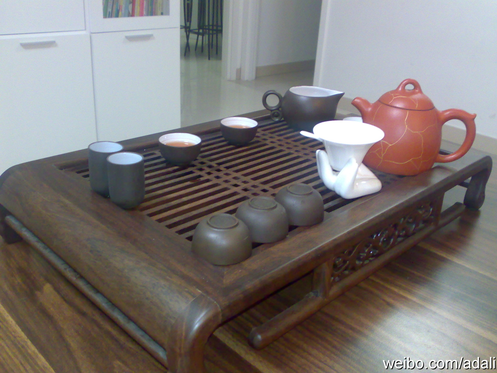

来自甲骨文的架构师祁敏志讲《构建企业私有云架构》，来自用友的@池建强 讲《企业应用软件与互联网的融合》。我到时也得去好好听听。

Ada李力
2011-04-16

Ada李力
2011-04-16
听人描述过混混型的讲师。你问他A问题，他扯到B上，你追着问B问题，他扯到C问题上，他扯的功夫很强，要么是时间有限，不容更多问题，要么是提问者也失去了耐心。我没碰到过这类讲师，倒是遇到过这样的求职者。

Ada李力
2011-04-16
下午有位上海出差来北京的发小要来家里，说只能呆两个小时，“清茶一杯聊聊”即可。我很实在，就请他喝了个水饱。
- 